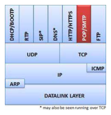
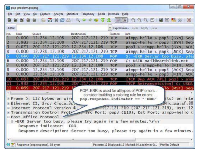
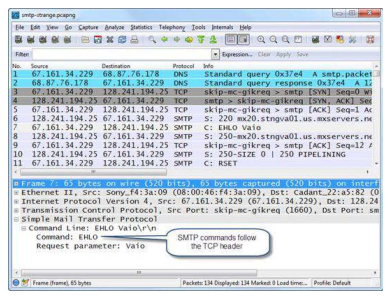
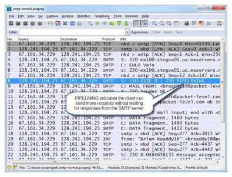
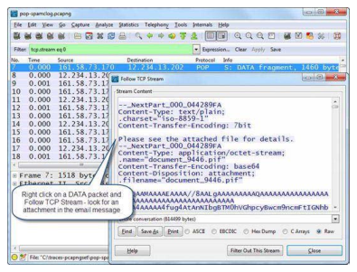

Wireshark Network Analysis 2nd Ed · Laura Chappell
Every email tells a story — read the SMTP handshake and POP3 exchange to understand it.
POP3, SMTP, and IMAP are the three protocols that power email — all visible in Wireshark.
No questions yet.
No notes yet.
💡THINK FIRST · PURPOSE OF EMAIL
Email uses different protocols for sending vs retrieving. SMTP sends email from client to server AND between mail servers. POP3 and IMAP retrieve email from the server. What is the key difference between POP3 and IMAP in terms of where email is stored?
HINT
Think about what happens to email on the server after a POP3 client downloads it vs what an IMAP client does.
MODEL ANSWER
POP3: downloads email to the local client and typically deletes it from the server. Email lives on your local device — accessing from multiple devices means older emails may not be available everywhere. IMAP: email stays on the server. Clients sync with the server — you see the same email from every device. Folders are maintained on the server. IMAP is preferred for multi-device access. POP3 is defined in RFC 1939; IMAP in RFC 1730; SMTP in RFC 2821.
The Purpose of Email
Email programs use POP (Post Office Protocol) or IMAP (Internet Message Access Protocol) to retrieve email and SMTP (Simple Mail Transfer Protocol) to send email. This chapter covers POP and SMTP.
POP is defined in RFC 1939. IMAP is defined in RFC 1730. Both are TCP-based. SMTP is defined in RFC 2821. POP itself does not provide security in email data transfer — usernames, passwords, and email content are sent in clear text unless encryption (STARTTLS/SSL) is enabled.
EMAIL IS NOT SECURE BY DEFAULT
POP3, IMAP, and SMTP transmit email content, usernames, and passwords in clear text unless encrypted. Use POP3S (port 995), IMAPS (port 993), and SMTPS (port 587 or 465 with STARTTLS) for encrypted email. In Wireshark, you can often read email content and credentials in plain POP3/SMTP sessions by following the TCP stream.
🧠
MENTAL NOTE
Email protocols: SMTP (send, port 25/587), POP3 (retrieve, port 110), IMAP (retrieve+sync, port 143). All clear text unless TLS. POP3 downloads+deletes from server. IMAP keeps on server, syncs across devices. Secure versions: SMTPS(465), POP3S(995), IMAPS(993).

📷Figure 296 — open trace file to view
Figure 296. Email programs always run over TCP
Ask a Question
Add a Note
💡THINK FIRST · POP TRAFFIC
POP3 uses a simple command/response sequence. After authentication, a client typically issues RETR followed by DELE to download and remove each message. What does the STAT command return? And what does the LIST command do?
HINT
Think about what basic operations you need: see how many messages, get a list, download one, delete one.
MODEL ANSWER
STAT returns the number of messages and total mailbox size. LIST returns a list of message numbers and sizes. RETR <n> downloads message number n. DELE <n> marks message n for deletion. QUIT commits the deletions and closes the session. POP3 uses simple OK/ERR responses. Authentication: USER command sends username, PASS sends password (both in clear text). A Wireshark Follow TCP Stream on a POP3 session shows the complete email headers and body in plain text.
Analyze POP Traffic
POP3 uses TCP port 110 (POP3S on port 995). The session begins with a TCP handshake, then the server sends a greeting. Basic POP3 session commands:
USER <name>: Sends the username
PASS <password>: Sends the password (clear text!)
STAT: Returns number of messages and total mailbox size
LIST [n]: Lists all messages or message n with sizes
RETR n: Retrieves message number n
DELE n: Marks message n for deletion (executed at QUIT)
TOP n m: Returns header + first m lines of message n
UIDL [n]: Returns unique IDs for messages
QUIT: Commits deletions and closes connection
Server responses: +OK followed by data (success) or -ERR followed by error message (failure).
🧠
MENTAL NOTE
POP3: port 110. USER → PASS → STAT/LIST → RETR → DELE → QUIT. Responses: +OK or -ERR. All clear text. Follow TCP Stream to read email content. POP3 downloads then deletes from server by default. Filter: pop or tcp.port==110.
📷Figure 297 — open trace file to view
Figure 297. A user retrieves one email message Analyze POP Problems POP communication problems can begin with the TCP connection process and can also be affected by high latency an

📷Figure 298 — open trace file to view
Figure 298. A POP error message indicates the POP server is busy

📷Figure 304 — open trace file to view
Figure 304. shows an EHLO command packet. In this packet, the command is followed by a request parameter, the name of the host sending the email.
Ask a Question
Add a Note
💡THINK FIRST · SMTP TRAFFIC
SMTP sends email from client to server and between mail servers. The SMTP server greeting is important — it announces the server's identity. What SMTP commands are used to deliver an email? And why might you see SMTP traffic in your capture even when you're not sending email?
HINT
Think about what happens in the background when mail servers relay messages to each other.
MODEL ANSWER
SMTP email delivery sequence: HELO/EHLO (greeting), MAIL FROM: (sender), RCPT TO: (recipient), DATA (start of message body — ends with a period on a line by itself), QUIT. You'll see SMTP even without sending email because mail servers relay messages between each other — your captured network might be handling email in transit. EHLO (Extended HELLO) returns the list of SMTP extensions supported (e.g., STARTTLS for encryption, SIZE for max message size, AUTH for authentication methods). SMTP spam often uses many RCPT TO: commands — filter: smtp.req.command==RCPT.
Analyze SMTP Traffic
SMTP uses TCP port 25 (SMTPS on port 465, SMTP with STARTTLS on port 587). SMTP communications between mail servers use port 25. Client-to-server submission typically uses port 587.
Normal SMTP session sequence:
Server sends 220 greeting (identifies server)
Client sends EHLO (or HELO for old servers) with its hostname
Server responds with supported extensions (STARTTLS, SIZE, AUTH, etc.)
Client sends MAIL FROM: with sender address
Server responds 250 OK
Client sends RCPT TO: with recipient address
Server responds 250 OK (or 550 if address doesn't exist)
Client sends DATA
Server responds 354 (start input, end with .)
Client sends email headers + body + single period on empty line
SMTP: port 25 (server-to-server), 587 (client-to-server). EHLO → MAIL FROM → RCPT TO → DATA → . (period) → QUIT. 250=success, 550=reject. STARTTLS upgrades plain SMTP to encrypted. Follow TCP Stream to see email content. Many RCPT TO = possible spam relay.
📷Figure 300 — open trace file to view
Figure 300. shows an email response. The response begins with the response indicator and the response description. There are only two response indicators used in POP communications:
📷Figure 301 — open trace file to view
Figure 301. SMTP messages are delivered in Internet Message Format Analyze Normal SMTP Communications After a successful TCP handshake, the SMTP server responds with a numerical c

📷Figure 302 — open trace file to view
Figure 302. An SMTP client sends an email message
📷Figure 303 — open trace file to view
Figure 303. shows an unusual SMTP traffic pattern. A host’s email program is performing an SMTP relay test by generating a series of MAIL FROM addresses to test whether the server will accept them.
Ask a Question
Add a Note
💡THINK FIRST · IMAP TRAFFIC
IMAP keeps email on the server and synchronizes with clients. Unlike POP3 which uses simple numbered commands, IMAP tags each command with a client-generated identifier. Why? And what IMAP capability allows clients to watch for new mail without polling constantly?
HINT
Think about what 'tagging' commands means for out-of-order responses, and what 'IDLE' does.
MODEL ANSWER
IMAP tags each command (e.g., A001 SELECT INBOX) because IMAP supports pipelining — the client can send multiple commands without waiting for each response. Tags allow matching responses to specific commands even when responses arrive out of order. The IDLE command allows the server to PUSH notifications to the client when new mail arrives — instead of polling every few minutes, the client stays connected and is notified instantly. This is how 'push email' works with IMAP. The client sends IDLE, the server sends EXISTS when new mail arrives, client sends DONE to end IDLE mode.
Analyze IMAP Traffic
IMAP uses TCP port 143 (IMAPS on port 993). IMAP keeps email on the server and synchronizes the client view. IMAP supports folders, flags, and server-side searching.
Key IMAP commands (preceded by a client-generated tag):
IMAP advantages over POP3: email stays on server (multi-device access), server-side folders and search, synchronization of read/unread flags, IDLE command for push notifications.
🧠
MENTAL NOTE
IMAP: port 143. Email stays on server — multi-device sync. Commands tagged with client ID (A001, A002...) for out-of-order matching. IDLE = push notifications. Filter: imap or tcp.port==143. IMAPS (encrypted): port 993.

📷Figure 299 — open trace file to view
Figure 299. SPAM messages clog an inbox—email retrieval takes over 30 minutes Dissect the POP Packet Structure POP packet structures are very simple. POP requests consist of a Re
Ask a Question
Add a Note
Email Problems & Filters
Common email problems:
SMTP 550 rejection: recipient address doesn't exist or is blocked (spam filter)
POP3 -ERR: authentication failure (wrong password) or mailbox locked
SMTP relay denied: server rejects MAIL FROM because sender not authorized
Connection refused: email server not running on expected port
Authentication failure: credentials wrong, or clear text auth blocked
Display filter reference: pop (POP3), smtp (SMTP), imap (IMAP). Capture filters: tcp port 25 (SMTP), tcp port 110 (POP3), tcp port 143 (IMAP).
Ask a Question
Add a Note
CHAPTER SUMMARY
TL;DR — Chapter 25
Email programs use POP or IMAP to retrieve email and SMTP to send email. POP3 downloads and typically deletes email from the server. IMAP keeps email on the server and synchronizes across multiple devices. SMTP handles both client-to-server submission and server-to-server relay.
All three protocols are plain text by default — credentials and email content are visible in Wireshark. Use TLS variants (POP3S, IMAPS, SMTPS) for secure email. Follow TCP Stream on any email session to read the complete exchange including headers and body.
Review Questions
Q25.1
What is the purpose of POP?
HINT
Think about what POP does — it retrieves email.
ANSWER
POP (Post Office Protocol) is used to retrieve email from a mail server to a local email client. POP3 (version 3, defined in RFC 1939) downloads email from the server to the local machine. By default, POP3 deletes messages from the server after downloading. This means email is stored locally — accessing from a second device won't show messages already downloaded by the first device. POP3 uses TCP port 110.
Q25.2
What are the default port numbers for POP3, SMTP, and IMAP?
HINT
Three protocols, three port numbers.
ANSWER
POP3: port 110 (POP3S encrypted: port 995). SMTP: port 25 (server-to-server); port 587 (client submission with STARTTLS); port 465 (SMTPS, deprecated but still used). IMAP: port 143 (IMAPS encrypted: port 993).
Q25.3
How does IMAP differ from POP3 in how email is stored?
HINT
Think about where email lives with each protocol.
ANSWER
POP3 downloads email to the local device and typically deletes it from the server — email is stored locally. IMAP keeps email on the server and synchronizes the client view — email remains on the server and is accessible from multiple devices. IMAP also supports server-side folders, read/unread flags across devices, server-side searching, and the IDLE command for push notifications. For multi-device access, IMAP is strongly preferred.
Q25.4
What SMTP command begins the transmission of the email body?
HINT
Think about the sequence: greeting, sender, recipient, then body.
ANSWER
The DATA command begins the transmission of the email body. The server responds with 354 (Start input; end with <CRLF>.<CRLF>). The client then sends the email headers and body, terminating with a single period on an otherwise empty line (which signals end of message). The server responds with 250 OK when the message is accepted. The sequence before DATA: EHLO → MAIL FROM → RCPT TO → DATA.
Q25.5
What is the syntax for capture and display filters for SMTP traffic?
HINT
Both capture and display filter syntax for SMTP.
ANSWER
For SMTP traffic: Capture filter: tcp port 25 (or tcp port 587 for submission). Display filter: smtp. To filter for specific SMTP commands: smtp.req.command==RCPT (find RCPT TO commands — useful for spotting spam relay attempts). To filter for SMTP authentication: smtp.req.command==AUTH. To find rejected recipients: smtp.response.code==550.